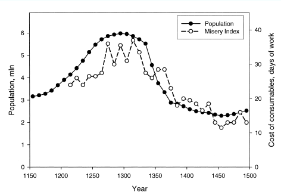
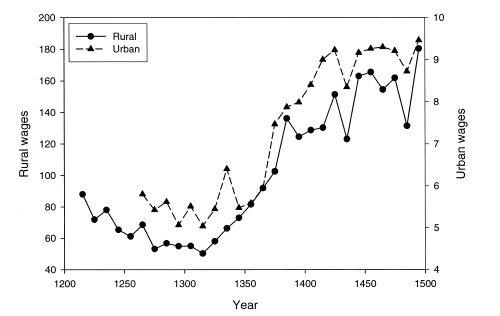
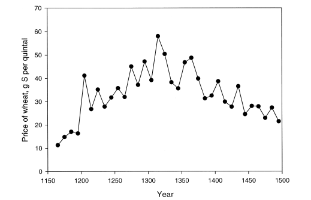
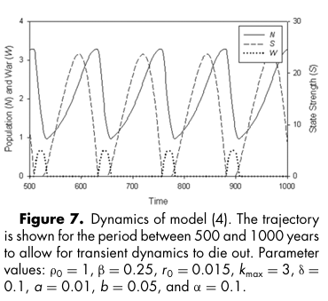
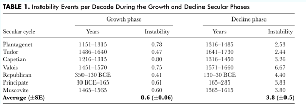
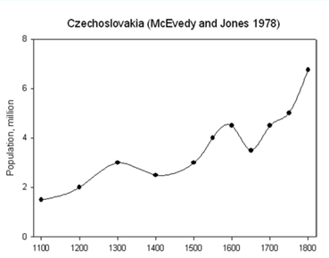

Context
My sister had invited me to her birthday party. The central activity was simple: everyone makes, and then presents, a powerpoint presentation. I had just watched a great video on the topic of predictive history.
The topic wasn't new to me. Specifically, I'd heard alot about the "Secular Cycle" on the history 102 podcast by Rudyard Lynch. The podcast is well worth a listen and contains a lot of great information, but Rudyard isn't the most mathematical person, and has a tendency to be a bit gullibe (he believes in alchemy and psychics). Naturally, I was skeptical that he'd found an actually insightful theory of history.
Peter Turchin is the man behind the theory. Despite initial misgivings (really? You have a theory to predict history? A likely story!) I found his writings both lucid and convincing. Secular cycles are the sexiest part of the theory, but they are just one of the many predictions made by the model. I reccomend reading "Historical Dynamics - Why States Rise and Fall" for more details.
There are competing theories of history, but I find Turching appropriately humble and appropriately predictive. Turchin's theories are both verifiable and falsifiable, which is more than I can say for most historical theories. Hell, some theories of physics aren't as scientific!
The following was the script I used for the presentation. You might think it doesn't fit a lighthearted presentation very well. You're correct! The presentation itself went down like a lead balloon. But I had fun doing the research. I hope you'll have fun too!
A Very Brief Introduction to Secular Cycles
Prophecies of doom are nothing new. A particularly well-known such prophet was Thomas Robert Malthus. The storybook fable is that he predicted that, due to the rising number of horses, by the end of the 19th century London would be under 5 feet of horse manure. Though Malthus never made such a prediction (that such a prediction was ever made at all seems to be apocryphal), what he did predict was rather more dire: a lowering of real wages as surplus resources diminished to nothing.
This is a rather bleak model of human existence, and one which makes a concrete prediction: population rises until it has reached the carrying capacity of the available land. At this stage, population remains stable. If some external factor (such as poor harvest) lowers the population, we’d expect real wages to immediately recover as the supply of available labor falls. If population somehow crosses this threshold, we’d expect the lack of resources to force population back towards the equilibrium value.
Mathematically, this model is quite simple: \(\frac{dN}{dt} = r_0 N(1-\frac{N}{K})\): \(N\) is the population, \(K\) is the maximum carriable population (let’s call it the Malthusian limit), and is the growth rate of the uninhibited population. Dire! Let’s look at an example and test this theory out: the black death. What do we predict? Simply put, we expect real wages (income relative to commodity prices) to rise sharply with the decrease in labor supply. This excess surplus will then cause the population to rebound within a generation or two as households now have plentiful resources.



However, that’s not what we see! Firstly, population had already begun to decline around 1300. Secondly, despite the now ample wages, the population remains low and doesn’t significantly rebound up until the end of the 15th century!
Perhaps our model was too naïve? Looking carefully, we might notice that the population around the end of the Plantagenet period displays a similar trend to that at the beginning. But what could cause this multi-century long cyclical population pattern?
What we’ve looked at is called ‘First order feedback’, effects on a short time scale (time scale in the technical sense here, of a characteristic period of a certain kind of effect). Quoting directly from Peter Turchin:
“For example, in a territorial mammal, as soon as population has increased to the point where all available territories are occupied, any surplus animals become nonterritorial “floaters” with poor survival rates and zero reproductive prospects. Thus, as soon as population numbers reach the carrying capacity determined by the total number of territories, population growth rate is reduced to zero without any time lag. Some regulatory processes, however, act on a slow timescale (these are second order feedbacks). The paradigmatic example of a second-order dynamical process in animal ecology is the interaction between predators and prey. When a population of prey reaches a high enough density for a predator population to begin increasing, there is no immediate effect on the prey’s population growth rate. This happens because it takes time for the predator numbers to increase to the level where they begin affecting prey numbers. Furthermore, once there are many predators, and the prey population has started collapsing, the predators continue to drive prey numbers down. Even though there are few prey, and most predators are starving, it takes time for predators to die out. As a result, second-order population feedbacks act with a substantial lag and tend to induce oscillations.”
But humans are the apex predators, so what could explain oscillations? Well, the only competition humans have is other humans! Suppose that in a state we have some level of internal warfare, \(W\). This internal warfare, be it crime, state oppression, or civil war, causes additional deaths every year: \(\frac{dN}{dt}=r_0 N\left(1-\frac{N}{K-cW}\right) - \eta WN\). The reduction in the Malthusian limit is due to the fact that warfare decreases the carrying capacity in some manner (torched farmland, overconsumption, market uncertainty driving down prices, or in any other way).
As a very crude approximation for the level of internal warfare, we can say it is proportional to the physical population density: every time two people bump into each other, there is some (very low, though obviously society dependent!) portion of the time the interaction escalates into violence. So, \(\frac{dW}{dt}=aN^2\). However, conflicts also have some rate at which they die out, so \(\frac{dW}{dt}=aN^2-bW\).
In the presence of a state however, we’d expect some proportion of state resources to be put towards internal conflict resolution. In the short term, this is done for the benefit of whoever sits at the top. But it doesn’t matter who it is, nobody wants a civil war against them! So, if state resources are \(S\), then \(\frac{dW}{dt}=aN^2-bW-aS\).
How many resources does the state have? We’d expect there to be more resources the more people there are, but this isn’t quite right! If there are more people in a state, there must be more state expenditure (if only to better extract resources).
Furthermore, barring extreme and unsustainable emergencies, the state cannot tax anything but the surplus production of the population (surplus, that is, above bare subsistence). Well, how much surplus production is there? We know that at saturation, there’s none!
The simplest model then is that surplus production per person falls linearly: \(\rho(N)=c_1 \left(1-\frac{N}{k-cW}\right)\).
Total surplus production is then \(N\rho(N)\). Putting it all together, \(\frac{dS}{dt}=\rho_0 N\left(1-\frac{N}{k-cW}\right)-\beta N\).
And would you look at that; we have a model! What are its dynamics? How does each variable change with time?

The specifics of differences between societies can alter these dynamics drastically: the mechanics of surplus extraction are tied up with the differentiation of the population between elite and commoner. These dynamics are highly culturally specific, in such a way that more elites and more elite production leads to a shorter cycle, about 100-150 years. This is in contrast to societies with fewer new elites, where the cycle typically lasts between 200-300 years.

Which societies produce more elites? Typically Polygamous ones, of course!
A small note to end things: What changes between cycles? At least in the west, we don’t see a reversion to the exact same population level each cycle, indeed we see some underlying growth.

Of course, the exact proportionality constants change with time. For example, in generations immediately following the devastation of civil wars, conflicts are less likely due to the wariness learned by those affected by the horrors of war. Even when war is the best option! Their children, however, will have no such inhibitions. These are shorter term, first order feedback trends occurring on the scale of generations: 20 to 30 years, not the millennial trends we’re after!
So what does change at this slower timescale? It’s the Malthusian limit! Over time, society and technology evolve such that each cycle, there is slightly more surplus than last time. The mechanisms for such growth are varied: new farmland due to favorable climate conditions, new varieties of foodstuffs, new agricultural practices, better breeding techniques, etc.
So, what might have changed since 1800? Well, obviously technology has improved rapidly. So rapidly in fact, that the Malthusian limit has kept growing and growing, at a timescale even faster than the generational cycle! Though the population never reaches anywhere near the Malthusian limit anyways, this is still a profound difference.
Second, and this is just my speculation, another profound shift occurred around the beginning of the 18th century, with the British south seas company. The details are a story for another time, but basically Britain invented a way to unleash the cap on state resources. Whilst not literally infinite, a government with a good track record can basically raise as much money as it needs, regardless of the surplus production of its citizens. Obviously, there have been civil wars in countries with these mechanisms in place, but I believe it might invalidate certain parts of this model.
So what have we learned? Less than I’d have wanted, if I’d had more time I’d use this background to now observe various societies and their differences. How Islamic societies have a shorter cycle than European ones, how external factors effect this, and how we might use this model to predict the demographics of the future. But I think I’ve left you with enough to ponder for now.